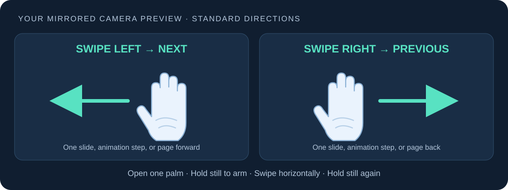

Thumbs up.
Next slide.
Choose Thumbs (default), or Point & swipe. Both work offline on your webcam.
Windows 10/11 x64No Python installationStarts paused
Extract and open
- Use the repository's direct Download for Windows link.
- Close the old app. Extract the new ZIP to a fresh folder; keep _internal beside the EXE.
- Run PPhandcontrol.exe, select your camera and viewer profile.
- Choose a gesture mode; changing settings pauses gestures.
Give the viewer focus
- Open your slideshow or PDF.
- Click the slide/page, outside menus and text fields.
- Press Ctrl+Alt+P to resume.
- The app can stay minimized while you present.
👍 Next · 👎 Previous
Fold the other fingers and hold one thumb up or down for about 0.35 seconds on Medium sensitivity. You do not need to swipe.
A held pose sends one command. Relax/lower your thumb for about 0.25 seconds before repeating. A stable opposite thumb can change direction after cooldown.
Left: Next · Right: Previous
Extend your index finger toward the camera, fold the other fingers, and swipe your hand horizontally. Directions follow the mirrored preview.
Relax/retract the index finger after each command and while returning the hand. Keep the whole hand visible; a slight angle helps if the fingertip hides it.
Pause and quit
P pauses/resumes and Q quits in the app.
Ctrl+Alt+P pauses/resumes globally.
Ctrl+Alt+Q quits globally.
Navigation is suppressed while the app itself is focused. Click your viewer before testing.
Viewer profiles
PowerPoint / Google Slides: normal arrow-key animation/slide steps.
Adobe Acrobat / Reader: Ctrl+PageDown / Ctrl+PageUp.
SumatraPDF: PageDown / PageUp.
Use slideshow/presentation mode. Browser PDF viewers are not guaranteed.
If tracking is uncertain
Use one hand in even lighting, keep the whole hand visible, and check the detected-gesture status. Verify the selected mode and relax between repetitions. Close the old app before starting an update. If the camera fails, close video-call apps, check Windows camera permissions, or retry another camera index. Shortcut conflicts are explained in the app; its buttons remain available.